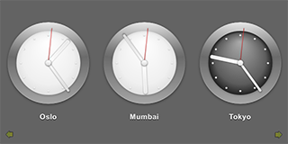

Qt Quick Demo - Clocks
A QML clock application that demonstrates using a ListView type to display data generated by a ListModel and a SpringAnimation type to animate images.

Clocks demonstrates using a ListView type to display data generated by a ListModel. The delegate used by the model is specified as a custom QML type that is specified in the Clock.qml file.
JavaScript methods are used to fetch the current time in several cities in different time zones and QML types are used to display the time on a clock face with animated clock hands.
Running the Example
To run the example from Qt Creator, open the Welcome mode and select the example from Examples. For more information, visit Building and Running an Example.
Displaying Data Generated by List Models
In the clocks.qml file, we use a Rectangle type to create the application main window:
Rectangle { id: root width: 640; height: 320 color: "#646464"
We use a ListView type to display a list of the items provided by a ListModel type:
ListView {
id: clockview
anchors.fill: parent
orientation: ListView.Horizontal
cacheBuffer: 2000
snapMode: ListView.SnapOneItem
highlightRangeMode: ListView.ApplyRange
delegate: Content.Clock { city: cityName; shift: timeShift }
model: ListModel {
ListElement { cityName: "New York"; timeShift: -4 }
ListElement { cityName: "London"; timeShift: 0 }
ListElement { cityName: "Oslo"; timeShift: 1 }
ListElement { cityName: "Mumbai"; timeShift: 5.5 }
ListElement { cityName: "Tokyo"; timeShift: 9 }
ListElement { cityName: "Brisbane"; timeShift: 10 }
ListElement { cityName: "Los Angeles"; timeShift: -8 }
}
}
List elements are defined like other QML types except that they contain a collection of role definitions instead of properties. Roles both define how the data is accessed and include the data itself.
For each list element, we use the cityName role to specify the name of a city and the timeShift role to specify a time zone as a positive or negative offset from UTC (coordinated universal time).
The Clock custom type is used as the ListView's delegate, defining the visual appearance of list items. To use the Clock type, we add an import statement that imports the folder called content where the type is located:
import "content" as Content
We use an Image type to display arrows that indicate whether users can flick the view to see more clocks on the left or right:
Image {
anchors.left: parent.left
anchors.bottom: parent.bottom
anchors.margins: 10
source: "content/arrow.png"
rotation: -90
opacity: clockview.atXBeginning ? 0 : 0.5
Behavior on opacity { NumberAnimation { duration: 500 } }
}
Image {
anchors.right: parent.right
anchors.bottom: parent.bottom
anchors.margins: 10
source: "content/arrow.png"
rotation: 90
opacity: clockview.atXEnd ? 0 : 0.5
Behavior on opacity { NumberAnimation { duration: 500 } }
}
}
We use the opacity property to hide the arrows when the list view is located at the beginning or end of the x axis.
In Clock.qml, we define a timeChanged() function in which we use methods from the JavaScript Date object to fetch the current time in UTC and to adjust it to the correct time zone:
function timeChanged() {
var date = new Date;
hours = internationalTime ? date.getUTCHours() + Math.floor(clock.shift) : date.getHours()
night = ( hours < 7 || hours > 19 )
minutes = internationalTime ? date.getUTCMinutes() + ((clock.shift % 1) * 60) : date.getMinutes()
seconds = date.getUTCSeconds();
}
We use a Timer type to update the time at intervals of 100 milliseconds:
Timer {
interval: 100; running: true; repeat: true;
onTriggered: clock.timeChanged()
}
We use Image types within an Item type to display the time on an analog clock face. Different images are used for daytime and nighttime hours:
Item {
anchors.centerIn: parent
width: 200; height: 240
Image { id: background; source: "clock.png"; visible: clock.night == false }
Image { source: "clock-night.png"; visible: clock.night == true }
A Rotation transform applied to Image types provides a way to rotate the clock hands. The origin property holds the point that stays fixed relative to the parent as the rest of the item rotates. The angle property determines the angle to rotate the hands in degrees clockwise.
Image {
x: 92.5; y: 27
source: "hour.png"
transform: Rotation {
id: hourRotation
origin.x: 7.5; origin.y: 73;
angle: (clock.hours * 30) + (clock.minutes * 0.5)
Behavior on angle {
SpringAnimation { spring: 2; damping: 0.2; modulus: 360 }
}
}
}
Image {
x: 93.5; y: 17
source: "minute.png"
transform: Rotation {
id: minuteRotation
origin.x: 6.5; origin.y: 83;
angle: clock.minutes * 6
Behavior on angle {
SpringAnimation { spring: 2; damping: 0.2; modulus: 360 }
}
}
}
Image {
x: 97.5; y: 20
source: "second.png"
transform: Rotation {
id: secondRotation
origin.x: 2.5; origin.y: 80;
angle: clock.seconds * 6
Behavior on angle {
SpringAnimation { spring: 2; damping: 0.2; modulus: 360 }
}
}
}
Image {
anchors.centerIn: background; source: "center.png"
}
We use a Behavior type on the angle property to apply a SpringAnimation when the time changes. The spring and damping properties enable the spring-like motion of the clock hands, and a modulus of 360 makes the animation target values wrap around at a full circle.
We use a Text type to display the city name below the clock:
Text {
id: cityLabel
y: 210; anchors.horizontalCenter: parent.horizontalCenter
color: "white"
font.family: "Helvetica"
font.bold: true; font.pixelSize: 16
style: Text.Raised; styleColor: "black"
}
Files:
- demos/clocks/clocks.pro
- demos/clocks/clocks.qml
- demos/clocks/clocks.qmlproject
- demos/clocks/clocks.qrc
- demos/clocks/content/Clock.qml
- demos/clocks/main.cpp
Images:
{kind=link}
{kind=link}
{kind=link}
{kind=link}
{kind=link}
{kind=link}
{kind=link}
{kind=link}
{kind=link}
See also QML Applications.